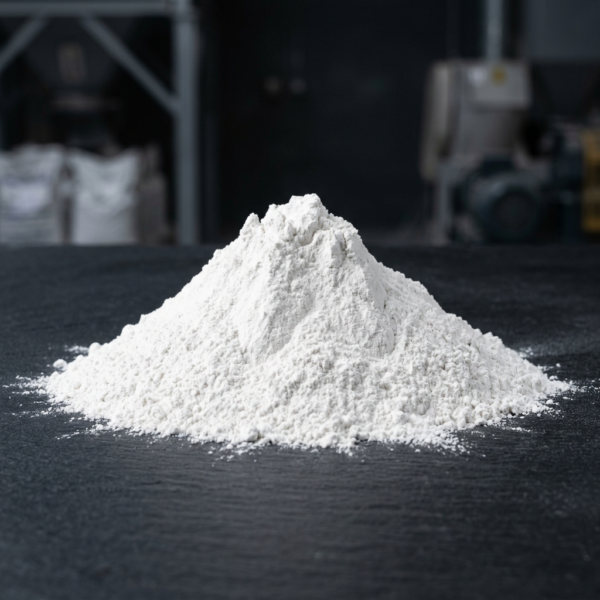
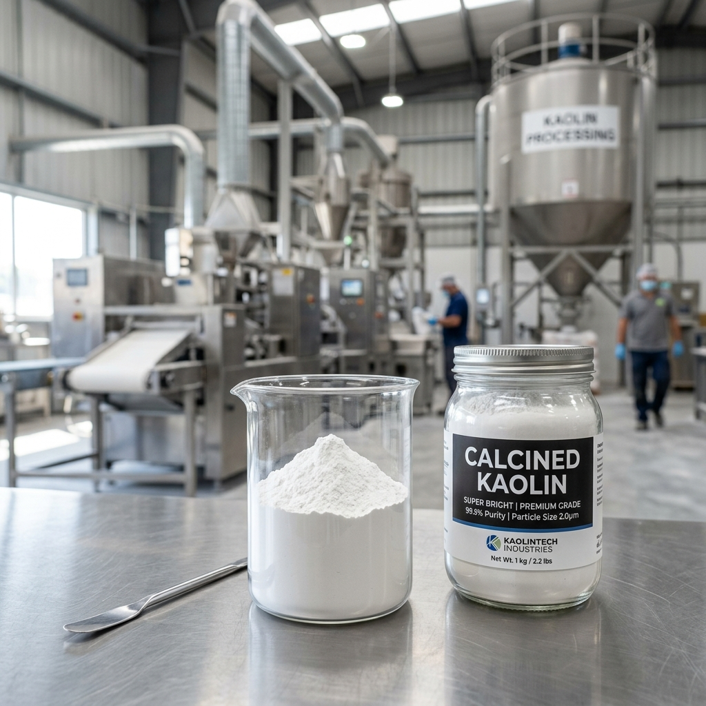
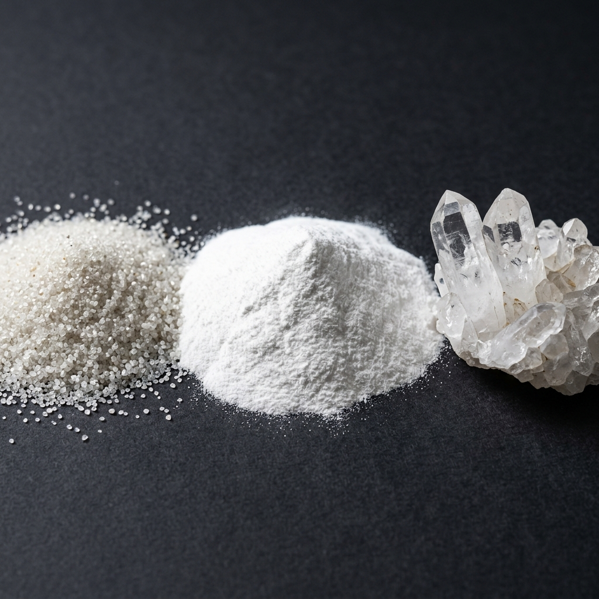
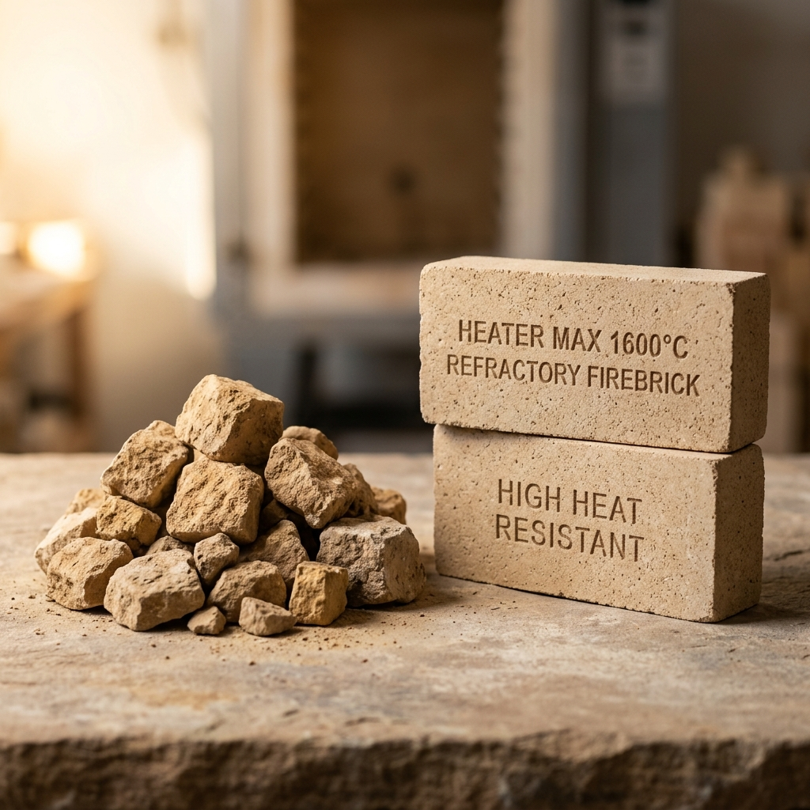

Refined and processed kaolin clay featuring high plasticity, soft texture, and excellent firing brightness. Used widely in tableware and sanitaryware body formulations.
| SiO2 | 46.5% - 48.0% |
|---|---|
| Al2O3 | 36.0% - 38.0% |
| Fe2O3 | < 0.8% |
| LOI | 12.0% - 13.5% |
Direct run-of-mine raw kaolin clay possessing its natural mineral lattice, offering high plasticity and excellent structural binding properties at an economical cost.
| SiO2 | 49.0% - 53.0% |
|---|---|
| Al2O3 | 30.0% - 34.0% |
| Fe2O3 | < 1.2% |
| Moisture | 8.0% - 12.0% |

Washed and hydro-cyclone classified clay yielding an ultra-fine particle sizing, minimal free silica (sand) impurities, and maximum whiteness.
| SiO2 | 45.0% - 47.0% |
|---|---|
| Al2O3 | 37.0% - 39.0% |
| Fe2O3 | < 0.5% |
| Brightness | 82% - 85% |
Thermally dehydrated clay treated above 1000°C. Possesses high brightness, superior opacity, and excellent electrical insulating qualities.
| SiO2 | 52.0% - 54.0% |
|---|---|
| Al2O3 | 40.0% - 44.0% |
| Fe2O3 | < 0.4% |
| Whiteness | 90% - 93% |

Pure, processed high-silica sand consisting of uniform sub-angular quartz grains. Very low iron contents make it ideal for clear glass and foundry cores.
| SiO2 | > 99.2% |
|---|---|
| Al2O3 | < 0.3% |
| Fe2O3 | < 0.04% |
| Moisture | < 0.5% |
Super-white, ground crystalline quartz (from 100 mesh to 500 mesh). Offers excellent silica purity and structural strength enhancement.
| SiO2 | > 99.5% |
|---|---|
| Al2O3 | < 0.2% |
| Fe2O3 | < 0.02% |
| Whiteness | > 92.0% |

High-alumina fire clay showing remarkable thermal stability. Retains physical structure and mechanical strength at temperatures above 1550°C.
| SiO2 | 50.0% - 55.0% |
|---|---|
| Al2O3 | 32.0% - 38.0% |
| Fe2O3 | < 2.0% |
| PCE Value | 30 - 32 |
Hydrated aluminum silicate mineral powder widely utilized as an inert filler. Promotes excellent opacity, suspension stability, and texture control.
| SiO2 | 46.0% - 48.0% |
|---|---|
| Al2O3 | 35.0% - 37.0% |
| Fe2O3 | < 0.9% |
| LOI | 12.5% - 14.0% |